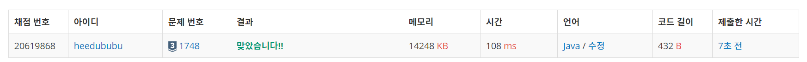

문제
https://www.acmicpc.net/problem/1748
( ᐛ )و 도전
1. 설계
- 1부터 N까지 모두 체크하기에는 시간초과가 발생할 수 있다.
- 자릿수별로 값을 곱해 길이를 계산한다.
2. 구현 (성공 코드)
1
2
3
4
5
6
7
8
9
10
11
12
13
14
15
16
17
18
19
20
21
import java.util.Scanner;
/**
* @author HEESOO
*
*/
public class Main {
public static void main(String[] args) {
// TODO Auto-generated method stub
Scanner scan=new Scanner(System.in);
String num=scan.next();
int length=num.length();
int n=Integer.parseInt(num);
int cnt=0;
for(int i=1;i<length;i++)
cnt+=9*Math.pow(10, i-1)*i;
cnt+=(n-Math.pow(10, length-1)+1)*length;
System.out.println(cnt);
}
}
3. 결과
 성공٩(˘◊˘)۶
4. 설명
- 숫자 n을 String형으로 받아 길이를 먼저 확인한다
- 숫자 n을 int형이 아닌 String으로 먼저 받아 자릿수(길이)가 얼만지 먼저 확인해 length에 저장한다.
- 이후 다음 사용을 위해 다시 int형으로 형변환하여 n에 저장한다.
- n 이전의 자릿수까지의 길이를 계산한다
- for문 i를 이용하여 길이 length-1까지의 길이를 계산한다.
| i 자릿수 | 갯수 | 길이 |
|---|---|---|
| 1~9 | 9 | 9*1 |
| 10~99 | 90 | 90*2 |
| 100~999 | 900 | 900*3 |
- 따라서 i자리 숫자까지의 새로운 수는
9*10^(i자릿수-1)*자릿수길이로 나타낼 수 있다.
- 마지막 자릿수에서 n까지의 길이를 구한다
- 마지막 자릿수는 모두 다 사용하는 것이 아니기 때문에 for문밖에서 계산한다.
- n=55라면, 마지막 두자릿수 계산은 (55-10+1)*2로 이루어져야한다.
- 이를 식으로 나타내면 (n-10^(length-1)+1)*length와 같다.
해결 완료!
참고
- #백준_1748 수 이어 쓰기 1 - Java 자바 https://ukyonge.tistory.com/104